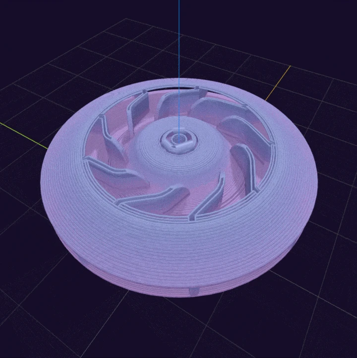
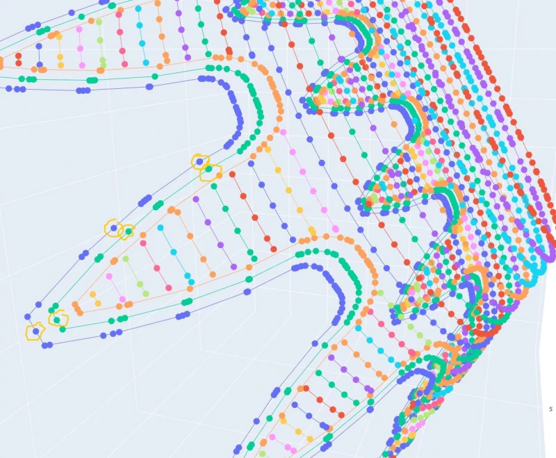
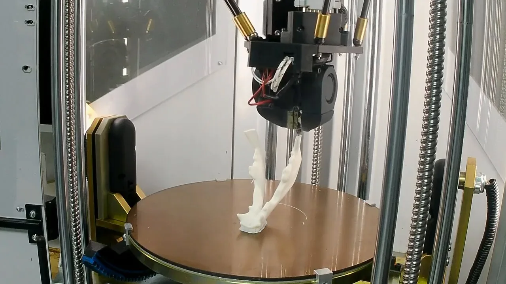

Projects
Flexam
At Flexam, a Vienna company building software for industrial additive manufacturing, I develop the path from a 3D model to a robot-ready, multi-axis toolpath: segmenting the part, slicing it, generating toolpaths and G-code, and building the web tools engineers use to inspect and adapt the result.

Multi-axis printers and robot arms can build parts that a conventional three-axis printer cannot, but only if the software decides how to split the part and in which direction to deposit each layer. Flexam's products, the Flexam Slicer and the Flexam Toolpath Editor, automate that planning for processes such as directed energy deposition, continuous-fibre composites, large-format printing, patient-specific medical devices, and concrete printing.
What I work on
- 3D segmentation. A geometry and machine-learning pipeline that splits a mesh into printable regions, analyses each region, proposes cutting planes and build orientations, and smooths the boundaries between regions. It decides how a part can be printed on a multi-axis machine.
- Slicing and toolpath generation. A slicing engine that turns a 3D model and machine settings into layers, toolpaths, and G-code, including non-planar layers and multi-axis motion. The engine is written in Go, with performance-critical work in Rust.
- Robotics. Toolpaths for industrial robot arms and multi-axis machines: tool orientation along the path, motion limits of the machine, and post-processing of the generated program for the robot cell.
- Full-stack product. The browser apps for slicing and toolpath editing (React, TypeScript, and three.js), the Go service that runs slicing jobs, and the deployment and monitoring stack behind them.
- AI-assisted tooling. Language-model agents and tools that help build, inspect, and debug toolpaths.
Contribution
I work across the stack: the segmentation pipeline, the slicing and toolpath engine, robot-ready output, the backend services, and the web interfaces.
Stack
Go, Rust, Python, TypeScript, JavaScript, React, three.js, FastAPI, trimesh, NumPy, scikit-learn, PostgreSQL, Docker
Links
- Live: https://flexam.tech
Slicing, layer by layer
A hands-on sketch of what a slicer does.
A slicer turns a 3D model into machine moves. It cuts the part into layers, then plans each layer: perimeters that trace the outline, an infill pattern inside them, and travel moves where the nozzle jumps without printing. Step through the layers of a generated part below.
Static preview of the sliced part. With JavaScript, an interactive 3D view loads here.
Planar layers are flat cuts, so the domed top is printed as a stack of shrinking rings with visible steps.
- Current layer outline
- Outer perimeter
- Inner perimeters
- Infill
- Travel move
- Nozzle at the seam
Gallery



Related work
Picked by shared fields, organisations, tools, and links.

Knowledge map
How this connects
The interactive map needs JavaScript — browse the list below.